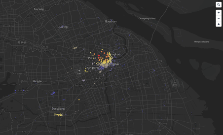
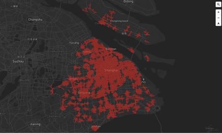
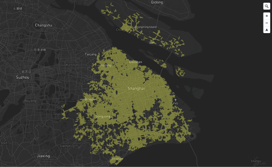
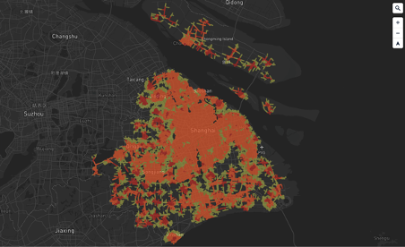
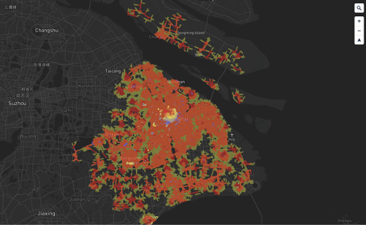

DATA ANLAYSIS
Places of Interest Analysis in ShanghaiBackground
 As we all know, Shanghai is the largest economy of China, and its daily throughput is among the highest in the world. With the huge population movement, the development of tourism plays a vital role for Shanghai. Below we use three layers to visualize the nature of many tourist attractions in Shanghai.
As we all know, Shanghai is the largest economy of China, and its daily throughput is among the highest in the world. With the huge population movement, the development of tourism plays a vital role for Shanghai. Below we use three layers to visualize the nature of many tourist attractions in Shanghai.
Accessibility
In the first layer, it shows the geographical distribution of major scenic spots in Shanghai. We divide the attractions into three parts according to accessibility of major transportation facilities, that is, the time range for tourists from arriving in Shanghai to arriving at the scenic spots:



Location
3000m Accessibility
5000m Accessibility
We divide it into three categories through accessibility. The first category has the highest score, which is represented by the red dot and the maximum radius. It combines the accessibility of the three major transportation of the airport, railway station, and bus station. Its convenience is the highest for tourists, and it is the most suitable for them as the first stop to visit after arrival. From red to yellow to blue, the accessibility of major transportation facilities is getting lower and lower. The blue dot has the lowest connection with external transportation facilities, which can be found that most of them are distributed outside the city, so it is suitable for local residents.
Overall Analysis


Overall Accessibility
Overall Map
On the other hand, the other two layers are surface data, which represent the service area (also called isochronous circle), that is, the area that contains all the traffic streets. The distances selected are 3000 meters and 5000 meters respectively. The small range is from the various scenic spots along the city road, spreading out of the range of 3000 meters, shown in red; the large represents the spread of 5000 meters, shown in yellow. This module uses ArcGIS to operate and is used to evaluate the accessibility of scenic spots, that is, it can be used as a selection criterion when tourists want to visit multiple scenic spots.